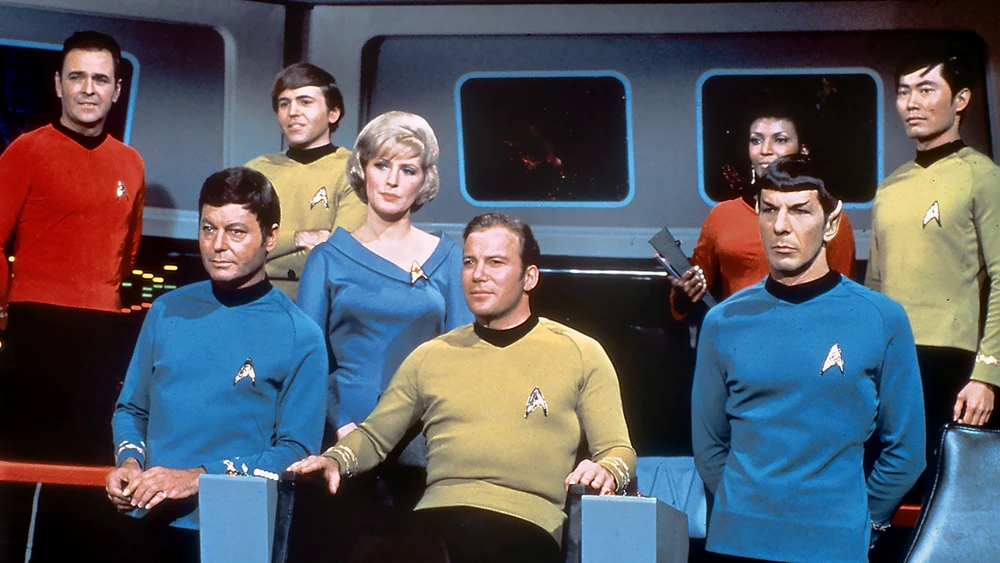

Star Trek: La Serie Original
| Star Trek: The Original Series | |
|---|---|
|
|
|
| Abreviatura | TOS |
| Creadores | Gene Roddenberry |
| Estudio | Desilu |
| Fechas de producción | 1964 – 1969 |
| Periodo de emisión | 8 Septiembre 1966 – 3 Junio 1969 |
| Episodios | 79 (3 temporadas), 1 piloto no emitido |
| Fragmento temporal | 2254 ("The Cage") 2265 – 2269 (resto de la serie) |
|
La USS Enterprise |
|
|  | |
|
La tripulación durante la misión de cinco años |
|
Star Trek: The Original Series, anteriormente llamada solo Star Trek, es la primera serie de la franquicia Star Trek.
Fue posteriormente apodada informalmente con el subtitulo "The Original Series", o TOS, luego de que se emitieran varias
series spin-offs relacionadas. Duró tres temporadas hasta que se canceló en 1969. Cuando se emitió por primera vez en la
televisión, y hasta el surgimiento de problemas por la reducción del presupuesto durante su tercera temporada, que produjo
una notable caída en la calidad de los episodios y por lo tanto se colocó en un espacio de muerte en el viernes por la noche
a las 10 pm por la cadena televisiva, Star Trek contó con un rating respetable en su franja horaria. Después de que fue
cancelada y entró en redifusión, sin embargo, su popularidad explotó hasta las nubes.
Presentó temáticas como sociedades utópicas y la igualdad racial, y el primer oficial afroamericano en un papel recurrente.
Diez años después, Star Trek: The Motion Picture reunió al elenco original en la gran pantalla a bordo de un USS Enterprise
renovado. Aparecieron en cinco películas posteriores, que terminaron con Star Trek VI: The Undiscovered Country en 1991, durante
la producción de la serie spin-off Star Trek: The Next Generation y poco antes de la muerte de Gene Roddenberry. Varios
personajes originales de la serie también aparecieron en la séptima película, Star Trek Generations, y en otras producciones
de Star Trek.
| Sumario |
|---|
| 1. Historia |
| 2. Fanes |
| 3. Personajes |
Historia
La escena transcurre a mediados del siglo XXIII. La Tierra ha sobrevivido las Guerras Eugenésicas (III Guerra Mundial) de
comienzos del siglo XXI. A mediados de ese siglo, al desarrollar tecnología warp ha hecho contacto con seres inteligentes
provenientes de otros sistemas solares. Los primeros fueron los vulcanos. Humanos y vulcanos se unieron en la formación de
la Federación Unida de Planetas, la unión de más de 100 mundos en la vecindad de la galaxia. Su órgano exploratorio-defensivo
es la Flota Estelar, la que mantiene una gran cantidad de naves espaciales capaces de viajes interestelares a velocidades
mayores a la de la luz.
La mayoría de los problemas sociales, incluyendo pobreza, crimen y enfermedades, han sido superados. El dinero ha dejado de
existir, y el gran propósito del hombre no son los bienes materiales sino la propia superación y la de sus semejantes.
También muchos humanos han optado por formar pequeñas colonias en planetas lejanos, y continúan luchando para sobrevivir y
prosperar.
No todos los mundos de la Federación tienen sistemas políticos tan sólidos como la Tierra. Algunas veces también se desatan
disturbios en ellos. Pero la amenaza más grande es la cantidad de razas agresivas que habitan la galaxia y que no son parte
de la Federación. Algunos de ellos son el Imperio Klingon y el Imperio Romulano. Batallas entre las naves de la Flota y las
naves klingon y romulanas a veces ocurren. Para evitar mayores conflictos, una Zona Neutral ha sido establecida entre el
espacio de la Federación y el territorio de klingons y romulanos.
Fanes
A los fanes de esta serie, que eran muy numerosos, se les conocía como trekkies, aunque como el típico fan era lo que se denomina un friki, algunos fanes se sentían molestos con este término que era usado en modo despectivo, por lo que se acuñó el término trekker. Hoy en día se usan casi indistintamente y de hecho son muchos los fanes de la serie que se reconocen a sí mismos como trekkies.
Personajes
- Capitán James T. Kirk -- William Shatner
- Primer Oficial Spock -- Leonard Nimoy
- Dr. Leonard H. McCoy -- DeForest Kelley
- Ingeniero Montgomery Scott -- James Doohan
- Oficial de Comunicaciones Uhura -- Nichelle Nichols
- Timonel Hikaru Sulu -- George Takei
- Navegante Pavel Chekov -- Walter Koenig
- Enfermera Christine Chapel -- Majel Barrett
- Janice Rand -- Grace Lee Whitney